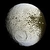

impact-crater

Definition: An impact crater is a circular depression in the surface of a solid astronomical object formed by the hypervelocity impact of a smaller object. In contrast to volcanic craters, which result from explosion or internal collapse, impact craters typically have raised rims and floors that are lower in elevation than the surrounding terrain. Lunar impact craters range from microscopic craters on lunar rocks returned by the Apollo program and small, simple, bowl-shaped depressions in the lunar regolith to large, complex, multi-ringed impact basins. Meteor Crater is a well-known example of a small impact crater on Earth.Impact craters are the dominant geographic features on many solid Solar System objects including the Moon, Mercury, Callisto, Ganymede and most small moons and asteroids. On other planets and moons that experience more active surface geological processes, such as Earth, Venus, Europa, Io and Titan, visible impact craters are less common because they become eroded, buried or transformed by tectonics over time. Where such processes have destroyed most of the original crater topography, the terms impact structure or astrobleme are more commonly used. In early literature, before the significance of impact cratering was widely recognised, the terms cryptoexplosion or cryptovolcanic structure were often used to describe what are now recognised as impact-related features on Earth.The cratering records of very old surfaces, such as Mercury, the Moon, and the southern highlands of Mars, record a period of intense early bombardment in the inner Solar System around 3.9 billion years ago. The rate of crater production on Earth has since been considerably lower, but it is appreciable nonetheless. Earth experiences, on average, from one to three impacts large enough to produce a 20-kilometre-diameter (12 mi) crater every million years. This indicates that there should be far more relatively young craters on the planet than have been discovered so far. The cratering rate in the inner solar system fluctuates as a consequence of collisions in the asteroid belt that create a family of fragments that are often sent cascading into the inner solar system. Formed in a collision 80 million years ago, the Baptistina family of asteroids is thought to have caused a large spike in the impact rate. The rate of impact cratering in the outer Solar System could be different from the inner Solar System.Although Earth's active surface processes quickly destroy the impact record, about 190 terrestrial impact craters have been identified. These range in diameter from a few tens of meters up to about 300 km (190 mi), and they range in age from recent times (e.g. the Sikhote-Alin craters in Russia whose creation was witnessed in 1947) to more than two billion years, though most are less than 500 million years old because geological processes tend to obliterate older craters. They are also selectively found in the stable interior regions of continents. Few undersea craters have been discovered because of the difficulty of surveying the sea floor, the rapid rate of change of the ocean bottom, and the subduction of the ocean floor into Earth's interior by processes of plate tectonics.
Source: Wikipedia
Wikipedia Page (Something wrong with this association? Let us know.)
Wikidata Page (Something wrong with this association? Let us know.)
Occurs in: